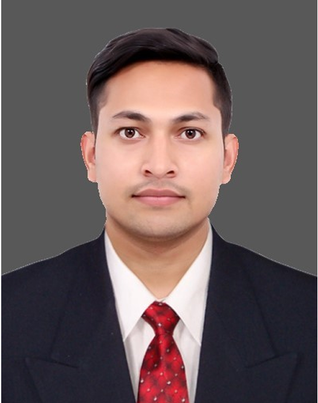

Tarini Prakash Mishra

Summary
Engineering experience in machine tool industry , metal cutting concept/strategies, process engineering,
Cycle time reduction, knowledge of special tooling solution, milling , turning, strong team player with excellent inter personal skill, written and oral communication.
Education
- Graduated(mechanical engineering) from GIET with 7.9 CGPA
- 12th science from stewart science college with 71.8%
- 10th from secondary borad high school with 83%
Work Experience
Assistant Manager-Dana Anand India Pvt Ltd
September 2023-Till date
- Feasibility study and defining technical requirement of manufacturing set-up for new projects
- Process design & process planning, preparation of RFQ, SCOPE, DAP, PR and delivering all the milestones till completion and handover
- Selecting machines, capital equipment quotes, comparison specifications, visiting potential supplier , technical discussion, commercial conditions, and presenting to CFT for final review
- Starting up production and engineering support with the involvement of CFT
- Facilitating PFD, control plan, work instructions, Process sheets,SWCT, PFMEA regular review & updating
- Monitoring key manufacturing indices-cycle time monitoring & It’s optimization, modification of process, modification of tooling & fixtures
- Participating in new product development process including PPAP ,overall planning for new model introduction within existing line Working with Cutting Tools, Fixtures, Tightening tools, VMC & HMC machines.
- Providing all the technical support related to tools, fixtures, CNC programs, cutting parameters & many more to the production departments
- Preparing &modifying cell layouts for changing the operation sequence (line balancing), increasing the productivity, cycle time enhancement
- Studying the component drawings received from client & plan the process, tools & fixture
- Experience in Machining, Grinding, Pressing process.
Process Engineer (Machining)-Sigma Toolings
March 2016-Feb 2019 date
- Reading the customer requirement and understanding the basic requirement.
- Reading and understanding input and output drawing of the component.
- Feasibility study and product selection(Tooling) to achieve the component require GD and T
- Defining the machining process and calculating no’ of set up require for the complete part machining.
- Cutting tool selection
- Designing the concept layout of tools
- Cycle time proposal with proposed concept drawings
- Complete offer preparation which include Tooling, Engineering (prove-out cost).
- Discussing the proposed total concept with customer and providing the best cost effective solution.
- Customer end component prove out for the time study proposal submitted with tool life and process capability providing best parameter for the tools.
- Handling turnkey projects and productivity improvement projects from customers like Makino, Cummins india, Craftsman automation ltd, Mazak, Johndeere, Automotive axle mysuru, DMW cnc india ltd , Mahindra & Mahindra, force motor Pune, Mantrucks ltd, GE india etc
Skills
- Engineering
- Manufacturing
- Machining
- Machine Tool
- GD & T
- CAD
- Project Management
- Team Leadership
- productivity Improvement
- lead Time reduction
- Process Improvement
- Process Planning
- Business Planning
Awards & Certificate
- Got the Golden Trophy in RPA category in CII
Other